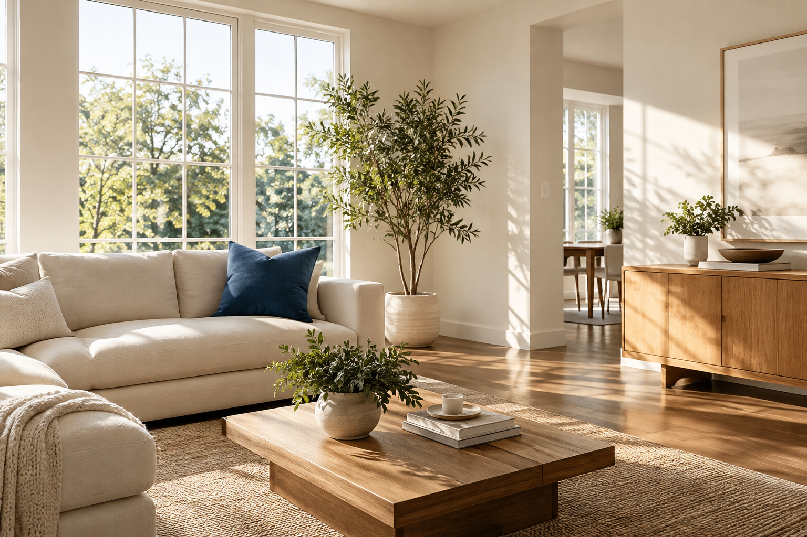

НА КАЖДЫЙ ДЕНЬ
Поддерживающая
Чтобы дома всегда было хорошо.
Всё основное — с заботой и без суеты.
- Убираем пыль и моем полы
- Приводим в порядок кухню
- Чистим сантехнику и зеркала
Оставьте уборку Жорке.
А себе — выходной, любимых и всё,
до чего давно не доходили руки.
Пара кликов — и вы знаете примерную цену

Освежить квартиру или начать с чистого листа?
Для каждого случая — своя уборка.
Чтобы дома всегда было хорошо.
Всё основное — с заботой и без суеты.
Доберёмся до тех самых уголков.
Большая уборка для большого выдоха.
Ремонт закончился. Пора жить.
Уберём следы большого обновления.
Выберите тип уборки и площадь — узнайте ориентировочную стоимость.
Перед уборкой согласуем список работ, удобное время и окончательную цену.
Проверьте результат вместе с нами. Остаётся только наслаждаться домом.
Достаточно встретить клинера, обсудить задачи и вернуться к окончанию уборки. Способ доступа в квартиру согласуем заранее.
Всё необходимое привезём с собой. Если у вас деликатные поверхности или особые пожелания к средствам, расскажите об этом заранее.
Площадь, тип уборки, состояние помещения и дополнительные задачи. Калькулятор показывает ориентир; окончательную стоимость согласуем до начала работ.
Мытьё окон, уборку внутри шкафов и бытовой техники можно обсудить отдельно. Так в заказе будут только нужные вам работы.